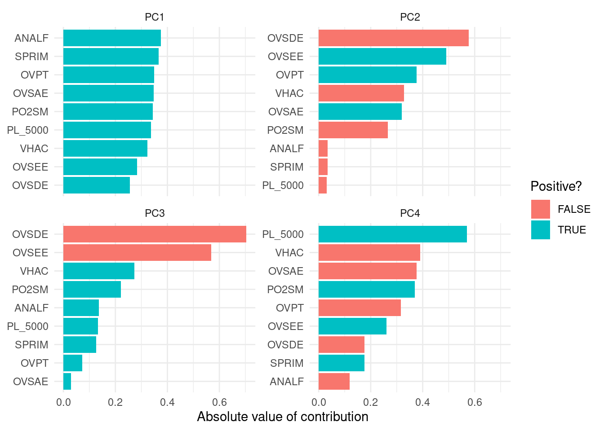
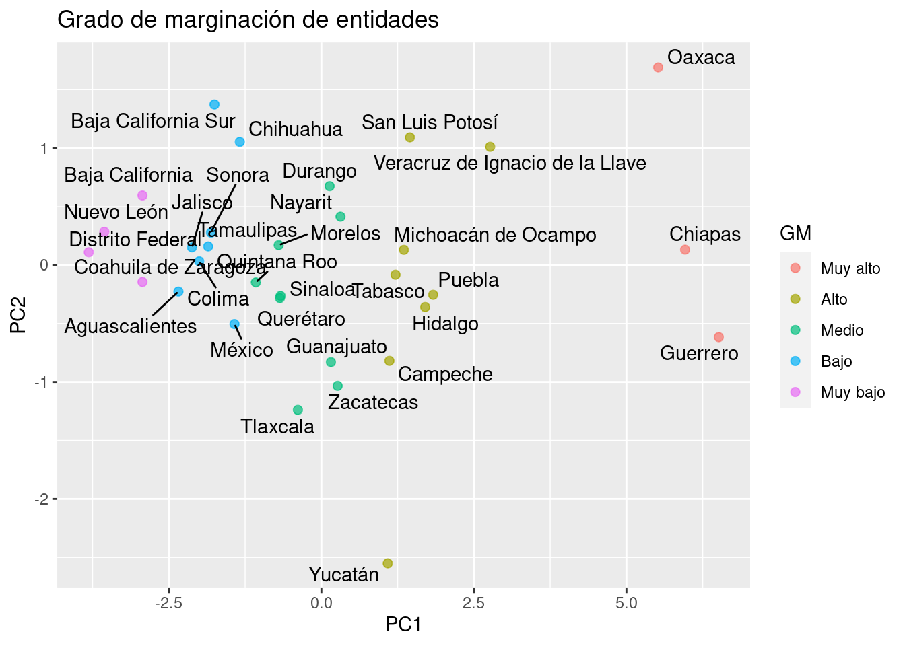
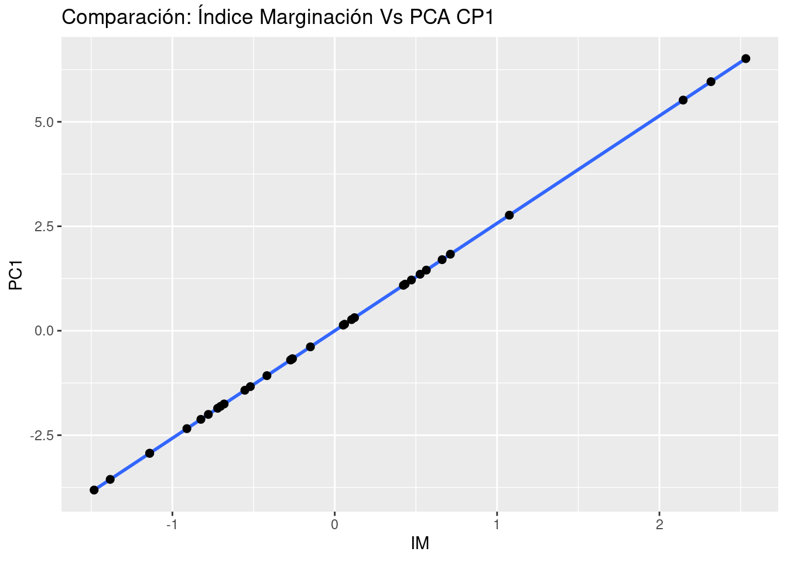
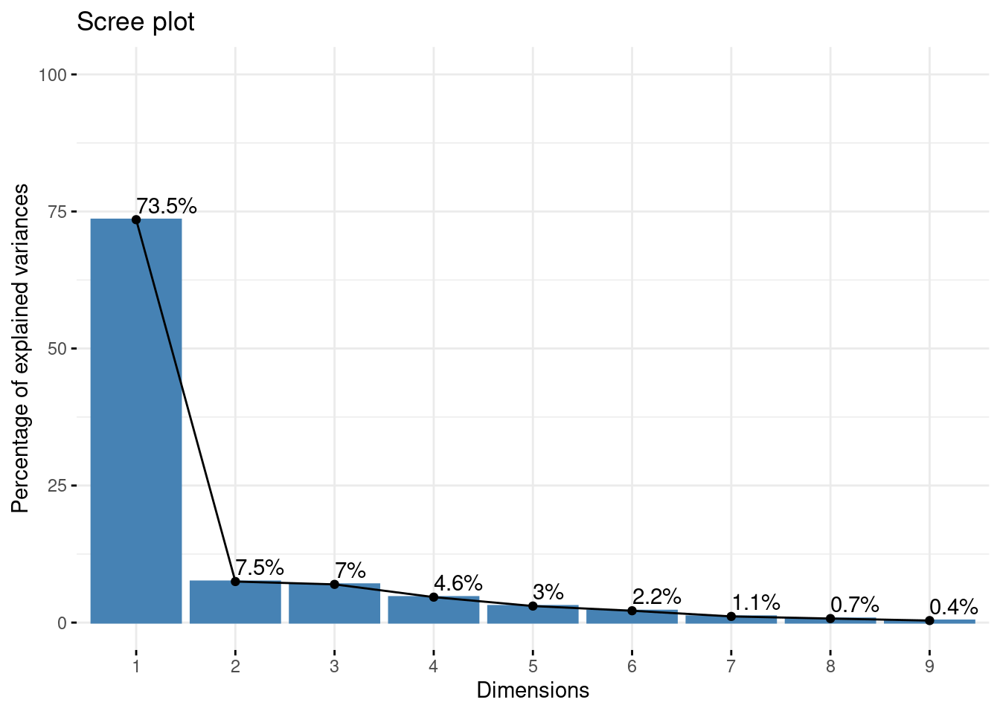

Capítulo 2 Análisis de Componentes Principales
El análisis PCA (por sus siglas en inglés) es una técnica de reducción de dimensión útil tanto para el proceso de análisis exploratorio, el inferencial y predictivo. Es una técnica ampliamente usada en muchos estudios, pues permite sintetizar la información relevante y desechar aquello que no aporta tanto. Es particularmente útil en el caso de conjuntos de datos “amplios” en donde las variables están correlacionadas entre sí y donde se tienen muchas variables para cada observación.

En los conjuntos de datos donde hay muchas variables presentes, no es fácil trazar los datos en su formato original, lo que dificulta tener una idea de las tendencias presentes en ellos. PCA permite ver la estructura general de los datos, identificando qué observaciones son similares entre sí y cuáles son diferentes. Esto puede permitirnos identificar grupos de muestras que son similares y determinar qué variables hacen a un grupo diferente de otro.
La idea detrás de esta técnica es la siguiente:
- Se desean crear nuevas variables llamadas Componentes Principales, las cuales son creadas como combinación lineal (suma ponderada) de las variables originales, por lo que cada una de las variables nuevas contiene parcialmente información de todas las variables originales.
\[Z_1 = a_{11}X_1 +a_{12}X_2 + ... + a_{1p}X_p\] \[Z_2 = a_{21}X_1 +a_{22}X_2 + ... + a_{2p}X_p\] \[...\] \[Z_p = a_{p1}X_1 +a_{p2}X_2 + ... + a_{pp}X_p\]
- Se desea que la primer componente principal capture la mayor varianza posible de todo el conjunto de datos.
\[\forall i \in 2,...,p \quad Var(Z_1)>Var(Z_i)\]
- La segunda componente principal deberá SER INDEPENDIENTE de la primera y deberá abarcar la mayor varianza posible del restante. Esta condición se debe cumplir para toda componente i, de tal forma que las nuevas componentes creadas son independientes entre sí y acumulan la mayor proporción de varianza en las primeras de ellas, dejando la mínima proporción de varianza a las últimas componentes.
\[Z_1 \perp\!\!\!\perp Z_2 \quad \& \quad Var(Z_1)>Var(Z_2)>Var(Z_i)\]
- El punto anterior permite desechar unas cuantas componentes (las últimas) sin perder mucha varianza.
¡¡ RECORDAR !!
A través de CPA se logra retener la mayor cantidad de varianza útil pero usando menos componentes que el número de variables originales.
Para que este proceso sea efectivo, debe existir ALTA correlación entre las variables originales.
Cuando muchas variables se correlacionan entre sí, todas contribuirán fuertemente al mismo componente principal. Cada componente principal suma un cierto porcentaje de la variación total en el conjunto de datos. Cuando sus variables iniciales estén fuertemente correlacionadas entre sí y podrá aproximar la mayor parte de la complejidad de su conjunto de datos con solo unos pocos componentes principales.
Agregar componentes adicionales hace que la estimación del conjunto de datos total sea más precisa, pero también más difícil de manejar.
2.0.1 Eigenvalores y eigenvectores
Los vectores propios y los valores propios vienen en pares: cada vector propio tiene un valor propio correspondiente. Los vectores propios son la ponderación que permite crear la combinación lineal de las variables para conformar cada componente principal, mientras que el valor propio es la varianza asociada a cada componente principal. Desde un punto de vista geométrico, el eigenvector es la dirección del vector determinado por la componente principal y el eigenvalor es la magnitud de dicho vector.
El valor propio de una componente es la varianza de este.
La suma acumulada de los primeros \(j\) eigenvalores representa la varianza acumulada de las primeras \(j\) componentes principales
El número de valores propios y vectores propios que existe es igual al número de dimensiones que tiene el conjunto de datos.
2.0.2 Implementación en R
library(sf)
library(magrittr)
library(tidymodels)
indice_marg <- st_read('data/IMEF_2010.dbf', quiet = TRUE)
glimpse(indice_marg)## Rows: 32
## Columns: 16
## $ CVE_ENT <chr> "01", "02", "03", "04", "05", "06", "07", "08", "09", "10", "1…
## $ AÑO <int> 2010, 2010, 2010, 2010, 2010, 2010, 2010, 2010, 2010, 2010, 20…
## $ POB_TOT <int> 1184996, 3155070, 637026, 822441, 2748391, 650555, 4796580, 34…
## $ ANALF <dbl> 3.274040, 2.600783, 3.234464, 8.370643, 2.645050, 5.157943, 17…
## $ SPRIM <dbl> 14.754823, 12.987567, 14.273833, 22.541207, 12.168029, 18.4761…
## $ OVSDE <dbl> 1.0649743, 0.4322072, 0.9436751, 6.4196750, 1.0916308, 0.68577…
## $ OVSEE <dbl> 0.62347891, 0.94517891, 2.84464884, 2.59080046, 0.53707721, 0.…
## $ OVSAE <dbl> 0.9854257, 3.5616214, 7.0865085, 9.7378176, 1.3908497, 1.17060…
## $ VHAC <dbl> 30.33066, 29.05839, 31.73806, 45.96720, 30.26891, 31.32052, 53…
## $ OVPT <dbl> 1.761813, 3.398537, 5.814081, 4.500699, 1.423701, 4.691477, 15…
## $ PL_5000 <dbl> 25.1626166, 10.3491523, 15.6188287, 30.8755279, 12.1486353, 14…
## $ PO2SM <dbl> 33.64880, 21.86970, 23.29986, 45.51076, 30.04270, 32.04402, 69…
## $ IM <dbl> -0.91086057, -1.14014880, -0.68128749, 0.43357139, -1.14000448…
## $ GM <chr> "Bajo", "Muy bajo", "Bajo", "Alto", "Muy bajo", "Bajo", "Muy a…
## $ LUGAR <int> 28, 30, 23, 10, 29, 26, 2, 21, 32, 15, 14, 1, 6, 27, 22, 8, 19…
## $ NOM_ENT <chr> "Aguascalientes", "Baja California", "Baja California Sur", "C…indice_marg %>% dplyr::count(GM, sort = TRUE)## GM n
## 1 Medio 9
## 2 Alto 8
## 3 Bajo 8
## 4 Muy bajo 4
## 5 Muy alto 3pca_recipe <- recipe(IM ~ ., data = indice_marg) %>%
update_role(NOM_ENT, GM, new_role = "id") %>%
step_normalize(ANALF, SPRIM, OVSDE, OVSEE, OVSAE, VHAC, OVPT, PL_5000, PO2SM) %>%
step_pca(ANALF, SPRIM, OVSDE, OVSEE, OVSAE, VHAC, OVPT, PL_5000, PO2SM, num_comp=9, res="res") %>%
step_rm(LUGAR, AÑO, POB_TOT) %>%
prep()
juice(pca_recipe)## # A tibble: 32 × 13
## CVE_ENT GM NOM_ENT IM PC1 PC2 PC3 PC4 PC5 PC6
## <fct> <fct> <fct> <dbl> <dbl> <dbl> <dbl> <dbl> <dbl> <dbl>
## 1 01 Bajo Aguasc… -0.911 -2.34 -0.227 0.372 0.492 0.264 0.0764
## 2 02 Muy b… Baja C… -1.14 -2.93 0.595 -0.0597 -0.492 0.291 -0.0508
## 3 03 Bajo Baja C… -0.681 -1.75 1.37 -0.683 -0.400 -0.304 0.160
## 4 04 Alto Campec… 0.434 1.12 -0.819 -0.151 -0.271 -0.929 0.178
## 5 05 Muy b… Coahui… -1.14 -2.93 -0.144 0.157 -0.133 0.0419 -0.0786
## 6 06 Bajo Colima -0.779 -2.00 0.0316 0.552 -0.136 0.320 -0.729
## 7 07 Muy a… Chiapas 2.32 5.96 0.132 1.36 -0.0122 -0.673 -0.471
## 8 08 Bajo Chihua… -0.520 -1.34 1.05 -1.27 0.633 -0.646 -0.387
## 9 09 Muy b… Distri… -1.48 -3.81 0.110 0.159 -0.453 0.205 -0.355
## 10 10 Medio Durango 0.0525 0.135 0.675 -1.50 0.929 -0.448 0.146
## # … with 22 more rows, and 3 more variables: PC7 <dbl>, PC8 <dbl>, PC9 <dbl>
## # ℹ Use `print(n = ...)` to see more rows, and `colnames()` to see all variable namesVeamos los pasos de esta receta:
Primero, debemos decirle a la receta qué datos se usan para predecir la variable de respuesta.
Se actualiza el rol de las variables nombre de entidad y grado de marginación con la función
NOM_ENT, ya que es una variable que queremos mantener por conveniencia como identificador de filas, pero no son un predictor ni variable de respuesta.Necesitamos centrar y escalar los predictores numéricos, porque estamos a punto de implementar PCA.
Finalmente, usamos
step_pca()para realizar el análisis de componentes principales.La función
prep()es la que realiza toda la preparación de la receta.
Una vez que hayamos hecho eso, podremos explorar los resultados del PCA. Comencemos por ver cómo resultó el PCA. Podemos ordenar los resultados mediante la función tidy(), incluido el paso de PCA, que es el segundo paso. Luego hagamos una visualización para ver cómo se ven los componentes.
A continuación se muestran la desviación estándar, porcentaje de varianza y porcentaje de varianza acumulada que aporta cada componente principal.
summary(pca_recipe$steps[[2]]$res)## Importance of components:
## PC1 PC2 PC3 PC4 PC5 PC6 PC7
## Standard deviation 2.572 0.82085 0.7920 0.64640 0.52101 0.44069 0.31797
## Proportion of Variance 0.735 0.07487 0.0697 0.04643 0.03016 0.02158 0.01123
## Cumulative Proportion 0.735 0.80990 0.8796 0.92603 0.95619 0.97777 0.98900
## PC8 PC9
## Standard deviation 0.25660 0.18201
## Proportion of Variance 0.00732 0.00368
## Cumulative Proportion 0.99632 1.00000Podemos observar que en la primera componente principal, las \(9\) variables que utilizó el Consejo Nacional de Población para obtener el Índice de Marginación 2010 aportan de manera positiva en el primer componente principal.
library(tidytext)
tidied_pca <- tidy(pca_recipe, 2)
tidied_pca %>%
filter(component %in% paste0("PC", 1:4)) %>%
group_by(component) %>%
top_n(9, abs(value)) %>%
ungroup() %>%
mutate(terms = reorder_within(terms, abs(value), component)) %>%
ggplot(aes(abs(value), terms, fill = value > 0)) +
geom_col() +
facet_wrap(~component, scales = "free_y") +
scale_y_reordered() +
labs(
x = "Absolute value of contribution",
y = NULL, fill = "Positive?"
)+
theme_minimal()
Notamos que las \(9\) variables aportan entre el \(25\%\) y el \(35\%\) a la primera componente principal.
2.0.3 Representación gráfica
library(ggrepel)
juice(pca_recipe) %>%
mutate(GM = factor(GM, levels = c("Muy alto", "Alto", "Medio", "Bajo", "Muy bajo")),
ordered = T) %>%
ggplot(aes(PC1, PC2, label = NOM_ENT)) +
geom_point(aes(color = GM), alpha = 0.7, size = 2) +
geom_text_repel() +
ggtitle("Grado de marginación de entidades")
Finalmente, podemos observar como (de izquierda a derecha) los estados con grado de marginación Muy bajo, Bajo, Medio, Alto y Muy Alto respectivamente.
juice(pca_recipe) %>%
ggplot(aes(x = IM, y = PC1)) +
geom_smooth(method = "lm") +
geom_point(size = 2) +
ggtitle("Comparación: Índice Marginación Vs PCA CP1")## `geom_smooth()` using formula 'y ~ x'
2.0.4 ¿Cuántas componentes retener?
Existe en la literatura basta información sobre el número de componentes a retener en un análisis de PCA. El siguiente gráfico lleva por nombre gráfico de codo y muestra el porcentaje de varianza explicado por cada componente principal.
library(factoextra)
library(FactoMineR)
res.pca <- indice_marg %>%
select(ANALF, SPRIM, OVSDE, OVSEE, OVSAE, VHAC, OVPT, PL_5000, PO2SM) %>%
as.data.frame() %>%
set_rownames(indice_marg$NOM_ENT) %>%
PCA(graph=FALSE)
fviz_eig(res.pca, addlabels=TRUE, ylim=c(0, 100))
El gráfico anterior muestra que hay una diferencia muy grande entre la varianza retenida por la 1er componente principal y el resto de las variables. Dependiendo del objetivo del análisis, podrá elegirse el numero adecuado de componentes a retener, no obstante, la literatura sugiere retener 1 o 2 componentes principales.
Regresando al tema de feature engineering, es posible realizar el proceso de componentes principales y elegir una de las dos opciones siguientes:
Especificar el número de componentes a retener
Indicar el porcentaje de varianza a alcanzar
La segunda opción elegirá tantas componentes como sean necesarias hasta alcanzar el hiperparámetro mínimo indicado. A continuación se ejemplifica:
Caso 1:
pca_recipe <- recipe(IM ~ ., data = indice_marg) %>%
update_role(NOM_ENT, GM, new_role = "id") %>%
step_normalize(ANALF, SPRIM, OVSDE, OVSEE, OVSAE, VHAC, OVPT, PL_5000, PO2SM) %>%
step_pca(ANALF, SPRIM, OVSDE, OVSEE, OVSAE, VHAC, OVPT, PL_5000, PO2SM,num_comp=2) %>%
step_rm(LUGAR, AÑO, POB_TOT) %>%
prep()
juice(pca_recipe)## # A tibble: 32 × 6
## CVE_ENT GM NOM_ENT IM PC1 PC2
## <fct> <fct> <fct> <dbl> <dbl> <dbl>
## 1 01 Bajo Aguascalientes -0.911 -2.34 -0.227
## 2 02 Muy bajo Baja California -1.14 -2.93 0.595
## 3 03 Bajo Baja California Sur -0.681 -1.75 1.37
## 4 04 Alto Campeche 0.434 1.12 -0.819
## 5 05 Muy bajo Coahuila de Zaragoza -1.14 -2.93 -0.144
## 6 06 Bajo Colima -0.779 -2.00 0.0316
## 7 07 Muy alto Chiapas 2.32 5.96 0.132
## 8 08 Bajo Chihuahua -0.520 -1.34 1.05
## 9 09 Muy bajo Distrito Federal -1.48 -3.81 0.110
## 10 10 Medio Durango 0.0525 0.135 0.675
## # … with 22 more rows
## # ℹ Use `print(n = ...)` to see more rowsCaso 2:
pca_recipe <- recipe(IM ~ ., data = indice_marg) %>%
update_role(NOM_ENT, GM, new_role = "id") %>%
step_normalize(ANALF, SPRIM, OVSDE, OVSEE, OVSAE, VHAC, OVPT, PL_5000, PO2SM) %>%
step_pca(ANALF, SPRIM, OVSDE, OVSEE, OVSAE, VHAC, OVPT, PL_5000, PO2SM,threshold=0.90) %>%
step_rm(LUGAR, AÑO, POB_TOT) %>%
prep()
juice(pca_recipe)## # A tibble: 32 × 8
## CVE_ENT GM NOM_ENT IM PC1 PC2 PC3 PC4
## <fct> <fct> <fct> <dbl> <dbl> <dbl> <dbl> <dbl>
## 1 01 Bajo Aguascalientes -0.911 -2.34 -0.227 0.372 0.492
## 2 02 Muy bajo Baja California -1.14 -2.93 0.595 -0.0597 -0.492
## 3 03 Bajo Baja California Sur -0.681 -1.75 1.37 -0.683 -0.400
## 4 04 Alto Campeche 0.434 1.12 -0.819 -0.151 -0.271
## 5 05 Muy bajo Coahuila de Zaragoza -1.14 -2.93 -0.144 0.157 -0.133
## 6 06 Bajo Colima -0.779 -2.00 0.0316 0.552 -0.136
## 7 07 Muy alto Chiapas 2.32 5.96 0.132 1.36 -0.0122
## 8 08 Bajo Chihuahua -0.520 -1.34 1.05 -1.27 0.633
## 9 09 Muy bajo Distrito Federal -1.48 -3.81 0.110 0.159 -0.453
## 10 10 Medio Durango 0.0525 0.135 0.675 -1.50 0.929
## # … with 22 more rows
## # ℹ Use `print(n = ...)` to see more rowsAsí es como usaremos el análisis de componentes principales para mejorar la estructura de variables que sirven de input para cualquiera de los modelos posteriores. Continuaremos con un paso más de pre-procesamiento antes de comenzar a aprender nuevos modelos.